Trực quan hóa và kể chuyện với dữ liệu
Điều tra một đợt dịch bệnh bằng dữ liệu mạng xã hội
Dựa trên VAST Challenge 2011, Mini-Challenge 1: Characterization of an Epidemic Spread.
Mọi hình và con số trong bài đều được vẽ và tính lại từ chính tệp dữ liệu của cuộc thi.
Vastopolis là một thành phố giả tưởng có khoảng 2 triệu dân. Sáng nay, nhiều bệnh viện báo rằng số người đến khám tăng vọt. Cùng lúc đó, dân thành phố liên tục đăng lên mạng xã hội những dòng chữ ngắn (microblog), mỗi dòng có kèm tọa độ GPS và giờ đăng.
Bạn là nhà phân tích dữ liệu của sở y tế. Giám đốc sở cần câu trả lời cho ba câu hỏi:
Bối cảnh theo đề bài gốc của VAST Challenge 2011 MC1. Thành phố và dữ liệu đều là mô phỏng, dùng để luyện kỹ năng phân tích.
Cách đi này gợi nhớ vụ điều tra dịch tả của bác sĩ John Snow ở Luân Đôn năm 1854: vẽ ca bệnh lên bản đồ, đặt giả thuyết, rồi kiểm tra bằng dữ liệu khác.
Mọi đoạn mã trong bài nằm trong một sổ tay Colab duy nhất, vastopolis-dieu-tra-dich-benh.ipynb. Chạy từ trên xuống dưới: ô đầu tiên tự tải dữ liệu, các ô sau lần lượt tạo ra đúng các hình trong slide.
Quy ước màu dùng xuyên suốt, để người xem không phải đọc chú thích lại từ đầu:
Việc đầu tiên của thám tử: mở hồ sơ và xem trong đó có gì.
Chương 1 · Bước 1: Hiện trường
import os, re, urllib.request, zipfile
import numpy as np
import pandas as pd
import matplotlib.pyplot as plt
import matplotlib.dates as mdates
from PIL import Image
URL = "https://visualdata.wustl.edu/varepository/VAST_Challenge_2011/datasets/MC_1_Materials_3-30-2011.zip"
FOLDER = "MC_1_Materials_3-30-2011"
if not os.path.isdir(FOLDER): # chỉ tải khi chưa có
urllib.request.urlretrieve(URL, "mc1.zip")
zipfile.ZipFile("mc1.zip").extractall(".")
for name in sorted(os.listdir(FOLDER)):
size = os.path.getsize(os.path.join(FOLDER, name)) / 1e6
print(f"{name:26s} {size:8.2f} MB")
MC1_Dataset_README.docx 1.21 MB Microblogs.csv 115.21 MB Population.csv 0.00 MB Vastopolis_Map.png 6.32 MB Weather.csv 0.00 MB
Microblogs.csv nặng hơn 115 MB: đây là “nhân chứng” chính.Dữ liệu: VAST Challenge 2011, Mini-Challenge 1 (bản lưu của Washington University in St. Louis).
df = pd.read_csv(f"{FOLDER}/Microblogs.csv", encoding="latin-1")
print("Số dòng, số cột:", df.shape)
print()
print(df.dtypes)
print()
print(df.head(5).to_string(max_colwidth=48))
Số dòng, số cột: (1023077, 4) ID int64 Created_at str Location str text str dtype: object ID Created_at Location text 0 3 5/18/2011 13:26 42.22717 93.33772 this convention filled with technology could... 1 3 5/10/2011 9:22 42.18881 93.35642 4 orang top scorer skrg 3 di antara nya pak... 2 3 5/14/2011 9:22 42.22479 93.35922 Nike 'gana' el Mundial al patrocinador ofici... 3 3 5/6/2011 9:22 42.2469 93.32527 Positiiff mau nabung beli kaos adidas asl... 4 3 5/19/2011 9:22 42.2354 93.35642 I kick it like Adidas
ID (người đăng), Created_at (giờ), Location (vĩ độ và kinh độ), text (nội dung).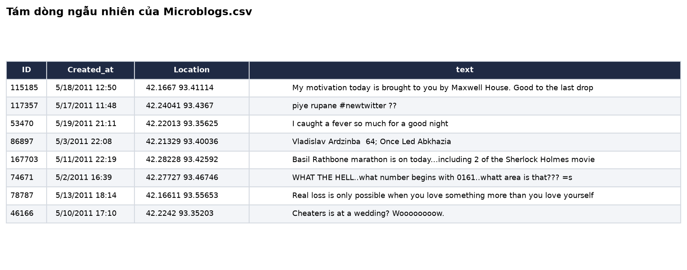
mau = df.sample(8, random_state=7)[["ID", "Created_at", "Location", "text"]].copy()
mau["text"] = mau["text"].fillna("").str.slice(0, 78)
table_png(mau, "Tám dòng ngẫu nhiên của Microblogs.csv", widths=[0.06, 0.13, 0.17, 0.64])
plt.show()
pop = pd.read_csv(f"{FOLDER}/Population.csv")
weather = pd.read_csv(f"{FOLDER}/Weather.csv")
print("Population.csv:", pop.shape)
print(pop.head(6).to_string(index=False))
print()
print("Weather.csv:", weather.shape)
print(weather.head(6).to_string(index=False))
Population.csv: (13, 3)
Zone_Name Population_Density Daytime_Population
Cornertown 59524 59226
Downtown 89286 258928
Eastside 178571 125000
Lakeside 297619 181548
Northville 119048 95238
Plainville 208333 147916
Weather.csv: (21, 4)
Date Weather Average_Wind_Speed Wind_Direction
4/30/2011 cloudy 9 E
5/1/2011 clear 5 E
5/2/2011 clear 4 SE
5/3/2011 showers 8 SE
5/4/2011 showers 10 N
5/5/2011 rain 10 N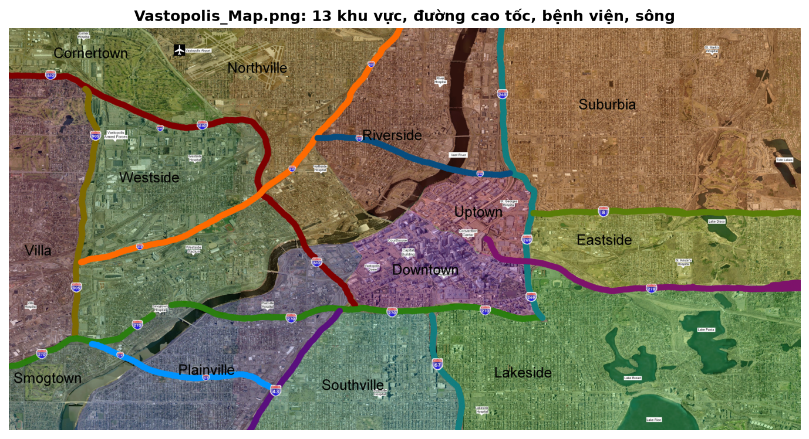
MAP = Image.open(f"{FOLDER}/Vastopolis_Map.png")
print("Ảnh bản đồ:", MAP.size, "điểm ảnh, chế độ", MAP.mode)
MAP_SMALL = MAP.convert("RGB").resize((2600, 1322)) # thu nhỏ để vẽ nhanh
Ảnh bản đồ: (5216, 2653) điểm ảnh, chế độ P
Ảnh Vastopolis_Map.png trong hồ sơ cuộc thi. Hình vẽ lại bằng matplotlib sau khi thu nhỏ ảnh gốc.
ID: 73.928 người dùng, mỗi người đăng khoảng 14 bài.Created_at: từ 30/4 đến 20/5/2011, chính xác đến phút.Location: tọa độ GPS, đặt được lên bản đồ.text: chữ tự do, nhiều ngôn ngữ, nhiều lỗi chính tả.Cả bài này chỉ xoay quanh bốn câu hỏi khi nào, ở đâu, nói gì, của ai. Trả lời xong bốn câu hỏi đó và ghép chúng lại, ta sẽ có lời giải cho vụ án.
Một thám tử giỏi không tin ngay lời khai. Dữ liệu cũng vậy.
Chương 2 · Bước 1: Hiện trường
loc = df["Location"].str.split(" ", expand=True).astype(float)
print("Kinh độ thô: nhỏ nhất", loc[1].min(), "| lớn nhất", loc[1].max())
df["lat"] = loc[0]
df["lon"] = -loc[1] # tệp ghi kinh độ Tây mà thiếu dấu trừ, ta thêm lại
df["t"] = pd.to_datetime(df["Created_at"], format="%m/%d/%Y %H:%M", errors="coerce")
bad = df[df["t"].isna()]
print("Dòng có thời gian hỏng:", len(bad))
print(bad[["ID", "Created_at"]].head(4).to_string(index=False))
print("Bài không có nội dung:", df["text"].isna().sum(), "| dòng trùng hệt:", df.duplicated().sum())
print(df[["lat", "lon"]].describe().round(4).to_string())
Kinh độ thô: nhỏ nhất 93.19066 | lớn nhất 93.56731
Dòng có thời gian hỏng: 21
ID Created_at
5592 5/16/2011 Fire-
6987 5/4/2011 Fire-
18811 5/19/2011 Fire-
26280 5/16/2011 Fire-
Bài không có nội dung: 170 | dòng trùng hệt: 0
lat lon
count 1.023077e+06 1.023077e+06
mean 4.222960e+01 -9.337750e+01
std 3.120000e-02 8.090000e-02
min 4.216200e+01 -9.356730e+01
25% 4.221090e+01 -9.342190e+01
50% 4.222540e+01 -9.336360e+01
75% 4.224600e+01 -9.333400e+01
max 4.230150e+01 -9.319070e+01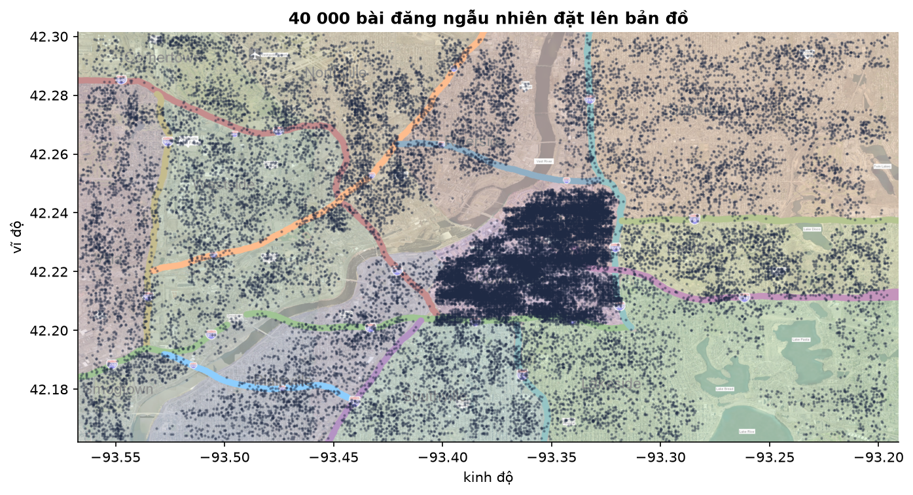
EXTENT = [df["lon"].min(), df["lon"].max(), df["lat"].min(), df["lat"].max()]
fig, ax = plt.subplots(figsize=(10, 5.1))
base_map(ax)
s = df.sample(40000, random_state=1)
ax.scatter(s["lon"], s["lat"], s=1.2, c=NAVY, alpha=0.35)
ax.set_title("40 000 bài đăng ngẫu nhiên đặt lên bản đồ")
plt.tight_layout()
plt.show()
df = df.dropna(subset=["t"]).copy() # bỏ dòng thời gian hỏng
df["text"] = df["text"].fillna("")
df["tl"] = df["text"].str.lower() # bản chữ thường để tìm từ khóa
per_user = df.groupby("ID").size()
print("Sau khi làm sạch:", len(df), "bài của", df["ID"].nunique(), "người dùng")
print("Khoảng thời gian:", df["t"].min(), "->", df["t"].max())
print("Số bài mỗi người:")
print(per_user.describe().round(2).to_string())
Sau khi làm sạch: 1023056 bài của 73928 người dùng Khoảng thời gian: 2011-04-30 00:00:00 -> 2011-05-20 23:59:00 Số bài mỗi người: count 73928.00 mean 13.84 std 0.78 min 3.00 25% 14.00 50% 14.00 75% 14.00 max 18.00
Câu hỏi đầu tiên của mọi vụ án: lúc nào?
Chương 3 · Bước 2: Thời gian
Muốn nói một ngày bất thường, ta phải biết một ngày bình thường trông như thế nào. Ta lấy 14 ngày đầu (30/4 đến 13/5) làm mốc, rồi đo mỗi ngày lệch bao nhiêu độ lệch chuẩn:
| \(x\) | Số bài đăng của ngày đang xét |
| \(\bar{x}\) | Số bài trung bình mỗi ngày trong 14 ngày mốc |
| \(s\) | Độ lệch chuẩn của 14 ngày mốc: các ngày bình thường dao động cỡ này |
daily = df.groupby(df["t"].dt.date).size()
base = daily.iloc[:14] # 14 ngày đầu làm mốc bình thường
z = (daily - base.mean()) / base.std()
print(f"Mức bình thường: {base.mean():,.0f} bài/ngày (độ lệch chuẩn {base.std():,.0f})")
print(pd.DataFrame({"bài": daily, "z": z.round(1)}).tail(7).to_string())
fig, ax = plt.subplots(figsize=(10, 4.2))
ax.plot(daily.index, daily.values, color=NAVY, lw=2, marker="o", ms=4)
hot = daily[z > 3]
ax.scatter(hot.index, hot.values, color=FLU, s=60, zorder=3, label="vượt mốc 3 độ lệch chuẩn")
ax.axhline(base.mean(), color=GRAY, ls="--", lw=1)
ax.set_title("Số bài đăng mỗi ngày"); ax.set_ylabel("số bài"); ax.legend(frameon=False)
ngay_thang(ax); plt.tight_layout()
plt.show()
Mức bình thường: 45,287 bài/ngày (độ lệch chuẩn 922)
bài z
t
2011-05-14 45554 0.3
2011-05-15 44962 -0.4
2011-05-16 48973 4.0
2011-05-17 46534 1.4
2011-05-18 61871 18.0
2011-05-19 71277 28.2
2011-05-20 69870 26.7
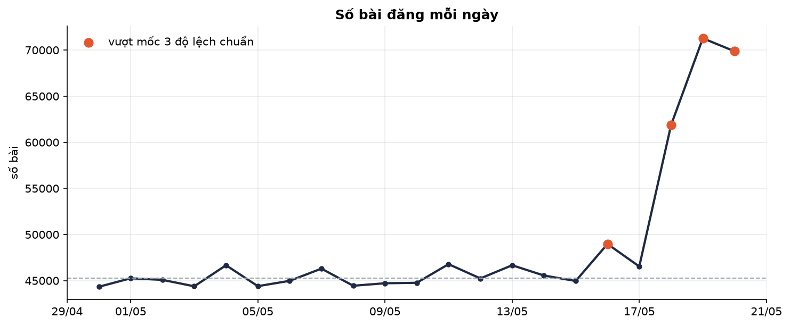
tab = df.groupby(df["t"].dt.floor("h")).size().rename("n").to_frame()
tab["gio"] = tab.index.hour
tab["ngay"] = tab.index.date
binh_thuong = tab.iloc[: 14 * 24].groupby("gio")["n"].mean() # mức theo từng giờ trong ngày
tab["ti_le"] = tab["n"] / tab["gio"].map(binh_thuong)
ratio = tab.pivot(index="ngay", columns="gio", values="ti_le") # hàng: ngày, cột: giờ
print("Lần đầu lượng bài vượt 1,5 lần bình thường:", tab[tab["ti_le"] > 1.5].index[0])
fig, ax = plt.subplots(figsize=(10, 4.6))
im = ax.imshow(ratio.values, aspect="auto", cmap="YlOrRd", vmin=0.8, vmax=2.2)
ax.set_xticks(range(0, 24, 3)); ax.set_xticklabels([f"{h}h" for h in range(0, 24, 3)])
ax.set_yticks(range(len(ratio))); ax.set_yticklabels([d.strftime("%d/%m") for d in ratio.index], fontsize=8)
ax.set_title("Số bài mỗi giờ so với mức bình thường của giờ đó (lần)"); ax.grid(False)
plt.colorbar(im, ax=ax, label="lần")
plt.tight_layout()
plt.show()
Lần đầu lượng bài vượt 1,5 lần bình thường: 2011-05-18 08:00:00
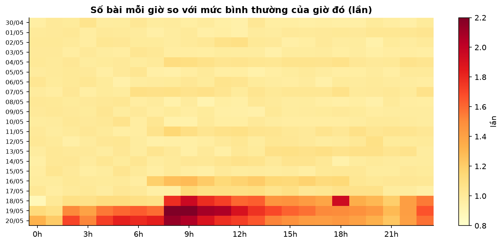
Không có cột “tên bệnh”. Nhưng người dân đã tự viết ra triệu chứng của mình.
Chương 4 · Bước 2: Thời gian
Ý tưởng: nếu một từ bỗng xuất hiện nhiều gấp hàng trăm lần bình thường, nhiều khả năng nó gắn với điều mới xảy ra. Ta đo bằng lift:
Ở đây \(p(w)\) là tỉ lệ bài đăng có chứa từ \(w\): lấy trong ngày đang xét ở tử số, và lấy trong tất cả các ngày trước đó ở mẫu số.
from sklearn.feature_extraction.text import CountVectorizer
from scipy import sparse
vec = CountVectorizer(token_pattern=r"[a-z']{3,}", min_df=30, binary=True)
X = vec.fit_transform(df["tl"]) # bài × từ (có hoặc không)
vocab = np.array(vec.get_feature_names_out())
ngay0 = df["t"].dt.normalize().min()
day_idx = (df["t"].dt.normalize() - ngay0).dt.days.values
D = sparse.csr_matrix((np.ones(len(df)), (np.arange(len(df)), day_idx)))
C = (X.T @ D).toarray() # từ × ngày: số bài chứa từ
N = np.bincount(day_idx) # số bài mỗi ngày
def top_words(ngay, k=10, toi_thieu=300):
"""Từ nổi bật nhất của một ngày so với TẤT CẢ các ngày trước đó."""
i = (pd.Timestamp(ngay) - ngay0).days
truoc = C[:, :i].sum(1) / N[:i].sum() # tần suất trước ngày đó
lift = (C[:, i] / N[i]) / (truoc + 1 / N.sum())
lift[C[:, i] < toi_thieu] = 0 # bỏ từ quá hiếm (lỗi chính tả)
best = np.argsort(-lift)[:k]
return [(vocab[j], int(C[j, i]), round(float(lift[j]))) for j in best]
05-18 ['shortness (5303x)', 'bedridden (1476x)', 'declining (941x)', 'chills (566x)', 'fatigue (508x)', 'sweats (489x)', 'sicker (467x)', 'eatting (364x)', 'sleeep (322x)', 'sickly (186x)'] 05-19 ['getta (563x)', 'nausea (328x)', 'runny (325x)', 'heartburn (279x)', 'diarrhea (224x)', 'muscles (152x)', 'cramps (146x)', "doctor's (120x)", 'begging (106x)', 'aching (72x)'] 05-20 ['terible (4025x)', 'pneumonia (2962x)', 'flem (2335x)', 'dreadfully (1696x)', 'vomitting (1344x)', 'hospitalized (544x)', 'atrocious (385x)', 'difficulty (133x)', 'sleeeeeeeep (131x)', 'awfully (127x)']
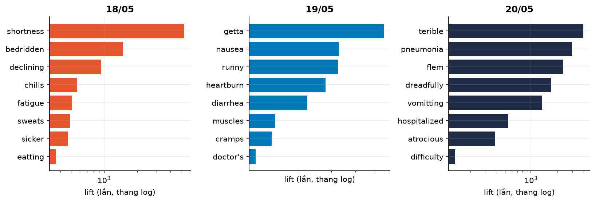
FLU_WORDS = ["fever", "chills", "sweats", "fatigue", "cough", "coughing", "shortness", "breath",
"headache", "ache", "aches", "aching", "runny", "sore throat", "pneumonia", "flu",
"bedridden", "debilitated", "sickly", "flem", "phlegm"]
GI_WORDS = ["diarrhea", "nausea", "nauseous", "vomit", "vomiting", "vomitting", "barfed", "puking",
"cramps", "stomach", "heartburn", "tummy", "toilet", "queasy"]
def pattern(words):
return r"\b(?:" + "|".join(words) + r")\b"
df["flu"] = df["tl"].str.contains(pattern(FLU_WORDS))
df["gi"] = df["tl"].str.contains(pattern(GI_WORDS))
df["ngay"] = df["t"].dt.date
Trung bình 14 ngày đầu: {'flu': 202.0, 'gi': 123.0}
flu gi
ngay
2011-05-16 224 122
2011-05-17 230 123
2011-05-18 14611 108
2011-05-19 21187 4131
2011-05-20 18325 3806
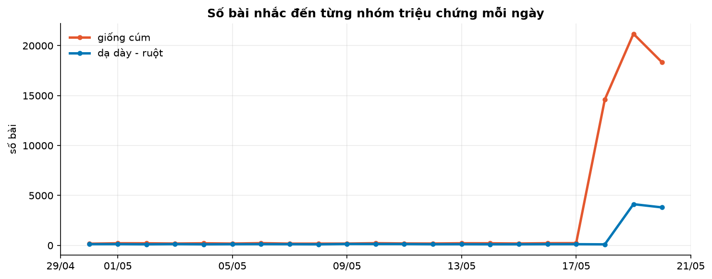
def thoi_diem_bat_dau(cot, so_lan=5):
gio = df.groupby(df["t"].dt.floor("h"))[cot].sum()
nen_gio = gio.iloc[: 14 * 24]
nguong = nen_gio.mean() + so_lan * nen_gio.std()
vuot = gio[gio > nguong]
return vuot.index[0], round(nguong)
for cot, ten in [("flu", "giống cúm"), ("gi", "dạ dày - ruột")]:
t0, nguong = thoi_diem_bat_dau(cot)
print(f"Nhóm {ten}: vượt ngưỡng {nguong} bài/giờ lần đầu lúc {t0}")
Nhóm giống cúm: vượt ngưỡng 29 bài/giờ lần đầu lúc 2011-05-18 01:00:00 Nhóm dạ dày - ruột: vượt ngưỡng 19 bài/giờ lần đầu lúc 2011-05-19 02:00:00
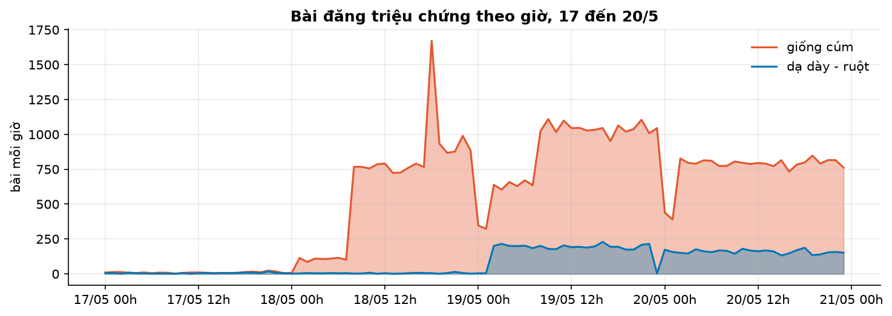
Ta đã biết khi nào và bệnh gì. Giờ đặt từng bài đăng lên bản đồ.
Chương 5 · Bước 3: Khoanh vùng
from datetime import date
ngay19 = df[df["ngay"] == date(2011, 5, 19)]
ten = {"flu": "giống cúm", "gi": "dạ dày - ruột"}
fig, axes = plt.subplots(1, 2, figsize=(12, 4.3))
for ax, cot, mau in zip(axes, ["flu", "gi"], [FLU, GI]):
d = ngay19[ngay19[cot]]
base_map(ax, 0.35)
ax.scatter(d["lon"], d["lat"], s=1.5, c=mau, alpha=0.4)
ax.set_title(f"{ten[cot]}: {len(d):,} bài ngày 19/5")
print(ten[cot], len(d), "bài")
plt.tight_layout()
plt.show()
giống cúm 21187 bài dạ dày - ruột 4131 bài
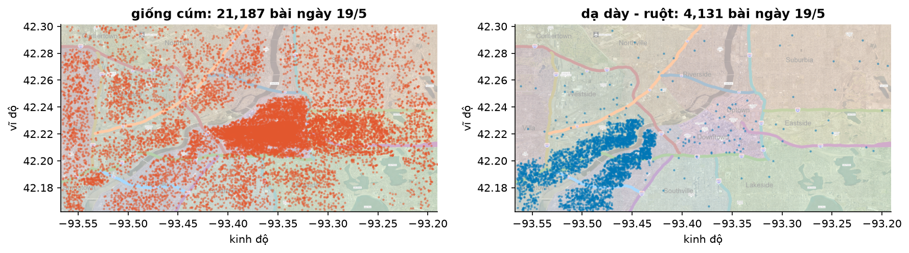
Để công bằng, với mỗi ô lưới ta lấy số bài ngày 19/5 trừ đi số bài trung bình mỗi ngày trong 14 ngày mốc, rồi làm mịn. Phần còn lại là “lượng bài vượt mức”.
xb = np.linspace(EXTENT[0], EXTENT[1], 140)
yb = np.linspace(EXTENT[2], EXTENT[3], 70)
def luoi(d):
"""Đếm số bài trong từng ô lưới."""
H, _, _ = np.histogram2d(d["lat"], d["lon"], bins=[yb, xb])
return H
nen = df[df["ngay"] < date(2011, 5, 15)]
n_nen = nen["ngay"].nunique()
fig, axes = plt.subplots(1, 2, figsize=(12, 4.3))
for ax, cot, cmap in zip(axes, ["flu", "gi"], ["Oranges", "Blues"]):
vuot = luoi(ngay19[ngay19[cot]]) - luoi(nen[nen[cot]]) / n_nen # trừ mức bình thường mỗi ngày
vuot = gaussian_filter(np.clip(vuot, 0, None), 1.2)
iy, ix = np.unravel_index(vuot.argmax(), vuot.shape)
print(f"{ten[cot]}: ô đậm nhất quanh kinh độ {xb[ix]:.3f}, vĩ độ {yb[iy]:.3f}")
giống cúm: ô đậm nhất quanh kinh độ -93.364, vĩ độ 42.219 dạ dày - ruột: ô đậm nhất quanh kinh độ -93.454, vĩ độ 42.217
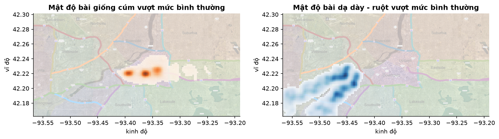
Ảnh bản đồ không kèm ranh giới khu dưới dạng tệp. Ta ước lượng ranh giới bằng cách đánh dấu vài điểm mốc trong mỗi khu, rồi gán mỗi vị trí cho khu có điểm mốc gần nhất.
df["khu"] = khu_cua(df["lon"].values, df["lat"].values)
dan = pop.set_index("Zone_Name")["Population_Density"].reindex(ten_khu).values
trieu_chung = df["flu"] | df["gi"]
d19 = df[(df["ngay"] == date(2011, 5, 19)) & trieu_chung]
d_nen = df[(df["ngay"] < date(2011, 5, 15)) & trieu_chung]
so_19 = d19.groupby("khu").size().reindex(range(13), fill_value=0).values
so_nen = d_nen.groupby("khu").size().reindex(range(13), fill_value=0).values / d_nen["ngay"].nunique()
ban_ngay = pop.set_index("Zone_Name")["Daytime_Population"].reindex(ten_khu).values
bang = pd.DataFrame({"khu": ten_khu, "dân": dan, "bài 19/5": so_19, "bình thường": so_nen.round(0),
"trên 1000 dân": (so_19 / dan * 1000).round(1),
"trên 1000 (ban ngày)": (so_19 / ban_ngay * 1000).round(1)})
print(bang.sort_values("trên 1000 dân", ascending=False).to_string(index=False))
khu dân bài 19/5 bình thường trên 1000 dân trên 1000 (ban ngày)
Downtown 89286 10066 85.0 112.7 38.9
Uptown 29762 1601 51.0 53.8 13.8
Smogtown 29762 849 6.0 28.5 30.3
Westside 148810 2145 20.0 14.4 7.6
Eastside 178571 2288 17.0 12.8 18.3
Plainville 208333 2538 14.0 12.2 17.2
Lakeside 297619 1268 22.0 4.3 7.0
…
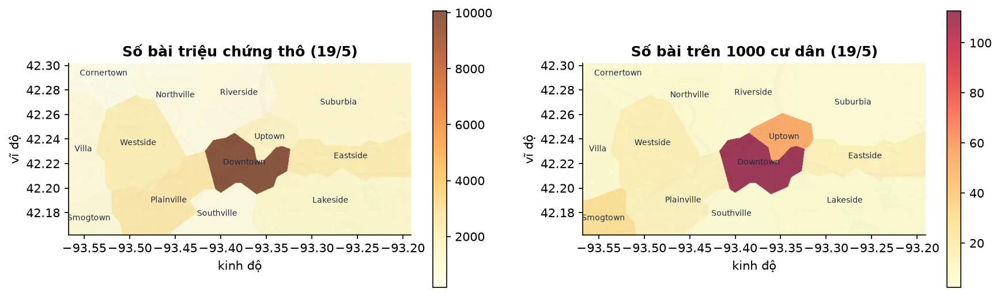
Bệnh không tự sinh ra. Điều gì đã xảy ra trước sáng 18/5?
Chương 6 · Bước 4: Nguồn bệnh
Ta làm lại phép đo “từ bùng nổ”, nhưng lần này cho cả ba tuần: tìm những từ có một ngày đỉnh cao hơn hẳn các ngày còn lại.
\(n(w)\) là số bài chứa từ \(w\) trong một ngày. “Ngày điển hình” là trung vị của 21 ngày; cộng 3 để tránh chia cho số quá nhỏ.
trung_vi = np.median(C, axis=1) # số bài chứa từ trong một ngày điển hình
dinh, ngay_dinh = C.max(1), C.argmax(1) # ngày cao nhất của từng từ
lan = dinh / (trung_vi + 3)
chon = (dinh >= 150) & (lan >= 8)
bung_no = pd.DataFrame({"tu": vocab[chon], "ngay": ngay_dinh[chon], "lan": lan[chon]})
for i, g in bung_no.sort_values("lan", ascending=False).groupby("ngay"):
ngay_str = (ngay0 + pd.Timedelta(days=int(i))).strftime("%d/%m")
print(ngay_str, "|", ", ".join(g["tu"].head(6)))
04/05 | antique, convetion, filled 07/05 | festival 11/05 | sham, convention 13/05 | plane, submerged, crashing, crashed, airport, ground 14/05 | capital, building 16/05 | comic, threats, bombs, informed, gearing, rampant 17/05 | smog, explosions, explosion, noon, accident, trucks 18/05 | shortness, sweats, fatigue, sleeep, fever, neeeed 19/05 | declining, runny, dreadful, nausea, heartburn, getta 20/05 | pneumonia, chills, diarrhea, terible, flem, superpowers
| Ngày | Từ khóa bùng nổ | Có vẻ là chuyện gì |
|---|---|---|
| 4/5 | antique, filled | Một triển lãm đồ cổ |
| 7/5 | festival | Một lễ hội |
| 11/5 | convention | Một hội nghị |
| 13/5 | plane, crashed, airport | Máy bay rơi gần sân bay |
| 14/5 | capital, building | Sự cố ở tòa nhà Capital |
| 16/5 | threats, bombs, informed | Dọa đánh bom |
| 17/5 | smog, explosions | Tiếng nổ và khói bụi |
| 17/5 | accident, trucks | Tai nạn xe tải |
Mỗi sự kiện có một mẫu tìm kiếm và một ngày. Ta dùng chúng để lấy ra các bài nói về sự kiện đó.
SU_KIEN = { # tên đặt theo từ khóa nổi bật, mẫu tìm kiếm, ngày
"Triển lãm đồ cổ": (r"\bantique\b", "2011-05-04"),
"Lễ hội": (r"\bfestival\b", "2011-05-07"),
"Hội nghị": (r"\bconvention\b", "2011-05-11"),
"Máy bay rơi": (r"\b(?:plane|airport|crashed|crashing)\b", "2011-05-13"),
"Tòa nhà Capital": (r"\b(?:capital|blaze)\b", "2011-05-14"),
"Dọa đánh bom": (r"\b(?:bomb|bombs|threats?)\b", "2011-05-16"),
"Xe tải, tai nạn": (r"\b(?:truck|trucks|accident|wrecked|bridge)\b", "2011-05-17"),
"Nổ, khói bụi": (r"\b(?:explosions?|smog|rattle|shook|boom|blast)\b", "2011-05-17"),
}
kx, ky = 69.17 * np.cos(np.radians(42.2)), 69.0 # số dặm ứng với 1 độ kinh độ, vĩ độ
hang, TAM, BAI_SK = [], {}, {}
for ten_sk, (mau_tu, ngay) in SU_KIEN.items():
d = df[(df["ngay"] == pd.Timestamp(ngay).date()) & df["tl"].str.contains(mau_tu)]
BAI_SK[ten_sk] = d
tam = (d["lon"].median(), d["lat"].median())
ban_kinh = np.median(np.hypot((d["lon"] - tam[0]) * kx, (d["lat"] - tam[1]) * ky))
TAM[ten_sk] = tam
hang.append([ten_sk, ngay[5:], len(d), round(tam[1], 4), round(tam[0], 4), round(ban_kinh, 2),
d["t"].quantile(0.1).strftime("%H:%M")])
bang_sk = pd.DataFrame(hang, columns=["sự kiện", "ngày", "số bài", "vĩ độ", "kinh độ", "tản (dặm)", "10% bài đầu"])
print(bang_sk.to_string(index=False))
sự kiện ngày số bài vĩ độ kinh độ tản (dặm) 10% bài đầu
Triển lãm đồ cổ 05-04 1691 42.2307 -93.3496 0.29 09:39
Lễ hội 05-07 1777 42.2100 -93.3323 0.36 07:46
Hội nghị 05-11 1859 42.2297 -93.3489 0.46 08:45
Máy bay rơi 05-13 1985 42.2889 -93.4800 0.66 14:44
Tòa nhà Capital 05-14 342 42.2221 -93.3548 0.39 10:06
Dọa đánh bom 05-16 2086 42.2277 -93.3751 0.50 08:06
Xe tải, tai nạn 05-17 884 42.2236 -93.4303 0.83 10:22
Nổ, khói bụi 05-17 1047 42.1760 -93.5496 0.31 10:01
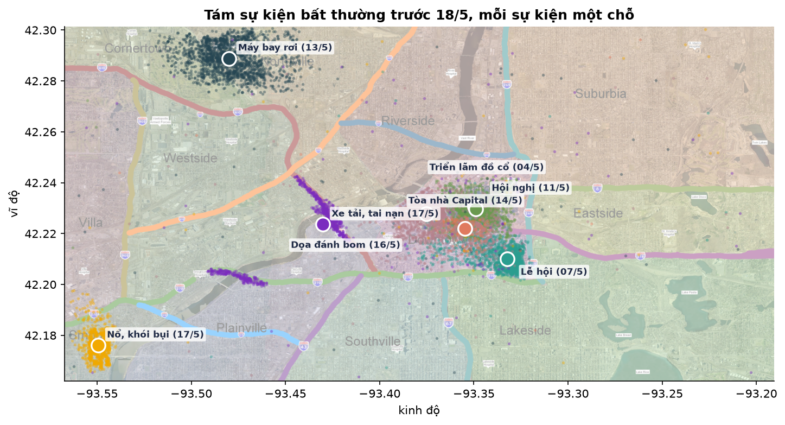
Nếu thủ phạm phát tán qua không khí, gió sẽ mang nó đi. Ta đọc Weather.csv: tệp ghi gió thổi từ hướng nào (quy ước khí tượng), nên ta đổi sang hướng gió thổi đến.
HUONG = {"N": 0, "NNE": 22.5, "NE": 45, "ENE": 67.5, "E": 90, "ESE": 112.5, "SE": 135, "SSE": 157.5,
"S": 180, "SSW": 202.5, "SW": 225, "WSW": 247.5, "W": 270, "WNW": 292.5, "NW": 315, "NNW": 337.5}
weather["ngay"] = pd.to_datetime(weather["Date"], format="%m/%d/%Y").dt.date
weather["gio_tu"] = weather["Wind_Direction"].map(HUONG) # gió thổi TỪ hướng này
weather["gio_den"] = (weather["gio_tu"] + 180) % 360 # nên thổi ĐẾN hướng ngược lại
w = weather[weather["ngay"] >= date(2011, 5, 14)].reset_index(drop=True)
print(w[["Date", "Weather", "Average_Wind_Speed", "Wind_Direction", "gio_den"]].to_string(index=False))
Date Weather Average_Wind_Speed Wind_Direction gio_den 5/14/2011 cloudy 8 NW 135.0 5/15/2011 clear 8 NW 135.0 5/16/2011 cloudy 10 W 90.0 5/17/2011 clear 8 W 90.0 5/18/2011 clear 9 W 90.0 5/19/2011 cloudy 9 WNW 112.5 5/20/2011 cloudy 5 NW 135.0
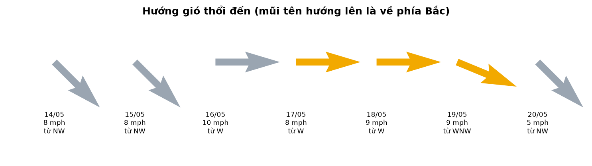
Với mỗi nghi phạm, ta đo mỗi ca cúm theo hai chiều: đi dọc theo hướng gió bao xa, và lệch khỏi đường gió bao xa.
| \(\Delta x,\ \Delta y\) | Hiệu tọa độ của ca bệnh so với nghi phạm, đổi sang dặm |
| \(\alpha\) | Hướng gió thổi đến, đo từ phía Bắc theo chiều kim đồng hồ (Đông là \(90^\circ\)) |
| \(d_{\parallel}>0\) | Ca bệnh nằm xuôi gió của nghi phạm |
| \(|d_{\perp}|<1{,}5\) | Ca bệnh nằm trong dải hẹp rộng 3 dặm quanh đường gió |
huong = weather.set_index("ngay").loc[date(2011, 5, 18), "gio_den"]
cua_so = df[(df["t"] >= "2011-05-18 06:00") & (df["t"] < "2011-05-18 14:00") & df["flu"]]
print(f"Gió 18/5 thổi về hướng {huong:.0f} độ (90 = Đông). Số bài giống cúm trong cửa sổ: {len(cua_so)}")
def toa_do_gio(d, tam, huong):
"""Khoảng cách dọc theo gió và lệch ngang so với đường gió đi qua `tam` (đơn vị dặm)."""
dx, dy = (d["lon"] - tam[0]) * kx, (d["lat"] - tam[1]) * ky
a = np.radians(huong)
return (dx * np.sin(a) + dy * np.cos(a)).values, (-dx * np.cos(a) + dy * np.sin(a)).values
hang = []
for ten_sk, tam in TAM.items():
doc, ngang = toa_do_gio(cua_so, tam, huong)
hang.append([ten_sk, 100 * (doc < 0).mean(), 100 * ((doc > 0) & (np.abs(ngang) < 1.5)).mean()])
diem = pd.DataFrame(hang, columns=["sự kiện", "% ca ngược gió", "% ca trong dải xuôi gió"]).set_index("sự kiện")
print(diem.round(1).sort_values("% ca trong dải xuôi gió", ascending=False).to_string())
Gió 18/5 thổi về hướng 90 độ (90 = Đông). Số bài giống cúm trong cửa sổ: 4808
% ca ngược gió % ca trong dải xuôi gió
sự kiện
Xe tải, tai nạn 3.7 90.0
Dọa đánh bom 28.0 66.7
Tòa nhà Capital 51.1 44.6
Triển lãm đồ cổ 54.5 39.5
Hội nghị 54.9 39.4
Lễ hội 75.8 17.9
Nổ, khói bụi 0.5 2.5
Máy bay rơi 2.1 2.4
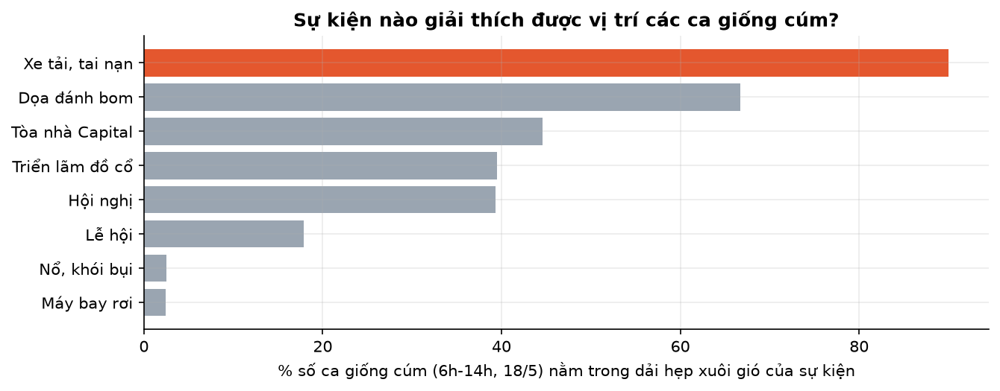
co_hai = df["tl"].str.contains(r"\btrucks?\b") & df["tl"].str.contains(r"\baccident\b")
so_ngay = co_hai.groupby(df["ngay"]).sum()
print(f"Bài chứa cả 'truck' lẫn 'accident': ngày 17/5 có {so_ngay[date(2011, 5, 17)]}, "
f"trung bình mỗi ngày trong 14 ngày đầu chỉ {so_ngay.iloc[:14].mean():.1f}")
hien_truong = df[co_hai & (df["ngay"] == date(2011, 5, 17))]
print("Giờ đăng sớm của nhóm bài này (10% đầu tiên):", hien_truong["t"].quantile(0.1).strftime("%H:%M"))
print("Ba bài đăng thật:")
for noi_dung in hien_truong["text"].sample(3, random_state=4):
print(" -", noi_dung[:100])
Bài chứa cả 'truck' lẫn 'accident': ngày 17/5 có 122, trung bình mỗi ngày trong 14 ngày đầu chỉ 1.2 Giờ đăng sớm của nhóm bài này (10% đầu tiên): 12:06 Ba bài đăng thật: - noon what perfect timing I can't believe how bad this truck accident it - I can't believe this terrible truck accident oh why did this have to happen at noon - I can't believe how bad this truck accident it I always hated trucks especially at noon now
Gọi là “nghi phạm” và “giả thuyết” vì ta chỉ có bài đăng mạng xã hội, không có xét nghiệm hay mẫu bệnh phẩm.
Không khí, nước hay con người? Mỗi đường đi để lại một dấu chân khác nhau.
Chương 7 · Bước 5: Lan truyền
Ngôi sao vàng là nghi phạm số một. Ta chia các ca cúm thành những khung 6 giờ, vẽ mỗi khung một bản đồ nhỏ, đặt cạnh nhau để so sánh.
NGUON = diem["% ca trong dải xuôi gió"].idxmax() # nghi phạm số một theo kiểm tra trước
print("Nghi phạm số một:", NGUON, "tại", np.round(TAM[NGUON], 4))
moc = pd.date_range("2011-05-18", periods=12, freq="6h")
fig, axes = plt.subplots(3, 4, figsize=(12, 6.6))
for ax, t0 in zip(axes.ravel(), moc):
d = df[(df["t"] >= t0) & (df["t"] < t0 + pd.Timedelta(hours=6)) & df["flu"]]
base_map(ax, 0.25)
ax.scatter(d["lon"], d["lat"], s=0.6, c=FLU, alpha=0.35)
ax.plot(*TAM[NGUON], marker="*", ms=11, mfc=GOLD, mec=NAVY, zorder=5)
ax.set_title(t0.strftime("%d/%m %Hh") + f": {len(d):,} bài", fontsize=8)
ax.set_xticks([]); ax.set_yticks([]); ax.set_xlabel(""); ax.set_ylabel("")
plt.tight_layout()
plt.show()
Nghi phạm số một: Xe tải, tai nạn tại [-93.4303 42.2236]
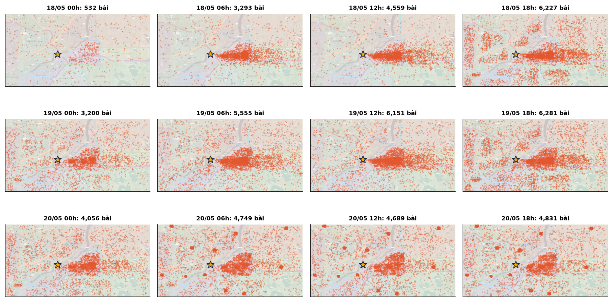
Với khung 3 giờ thay vì 6 giờ, ta ghép 24 bản đồ thành một ảnh động để thấy rõ dòng chảy theo thời gian.
from PIL import Image as PILImage
khung = []
moc3 = pd.date_range("2011-05-18", periods=24, freq="3h")
for t0 in moc3:
d = df[(df["t"] >= t0) & (df["t"] < t0 + pd.Timedelta(hours=3)) & df["flu"]]
fig, ax = plt.subplots(figsize=(6.4, 3.4), dpi=80)
base_map(ax, 0.3)
ax.scatter(d["lon"], d["lat"], s=1.2, c=FLU, alpha=0.4)
ax.plot(*TAM[NGUON], marker="*", ms=13, mfc=GOLD, mec=NAVY, zorder=5)
ax.set_title(f"Ca giống cúm, {t0:%d/%m %Hh} đến {t0 + pd.Timedelta(hours=3):%Hh} ({len(d):,} bài)", fontsize=9)
ax.set_xticks([]); ax.set_yticks([]); ax.set_xlabel(""); ax.set_ylabel("")
fig.tight_layout(); fig.canvas.draw()
khung.append(PILImage.fromarray(np.asarray(fig.canvas.buffer_rgba())).convert("P", palette=PILImage.ADAPTIVE))
plt.close(fig)
khung[0].save("flu_spread.gif", save_all=True, append_images=khung[1:], duration=450, loop=0)
print("Đã lưu flu_spread.gif:", len(khung), "khung hình, mỗi khung 3 giờ")
Đã lưu flu_spread.gif: 24 khung hình, mỗi khung 3 giờ
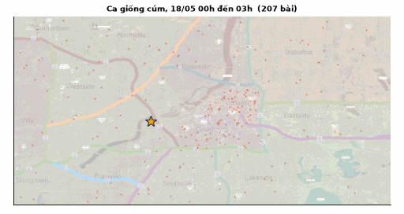
Ảnh động do ô mã c25_gif tạo ra: 24 khung hình, mỗi khung 3 giờ, từ 0h ngày 18/5 đến hết ngày 20/5.
Với mỗi khung 6 giờ, ta đo khoảng cách xuôi gió từ nghi phạm đến từng ca (theo hướng gió của chính ngày đó). Nếu bệnh lan dần ra xa, các con số phải tăng.
d = df[(df["t"] >= "2011-05-18") & (df["t"] < "2011-05-21") & df["flu"]].copy()
huong_ngay = d["ngay"].map(weather.set_index("ngay")["gio_den"]) # hướng gió của chính ngày đó
dx, dy = (d["lon"] - TAM[NGUON][0]) * kx, (d["lat"] - TAM[NGUON][1]) * ky
a = np.radians(huong_ngay)
d["doc"] = dx * np.sin(a) + dy * np.cos(a) # dặm dọc theo hướng gió
d["khung"] = d["t"].dt.floor("6h")
tk = d.groupby("khung")["doc"].agg(trung_vi="median", p90=lambda s: s.quantile(0.9), so_bai="size")
print(tk.round(2).to_string())
trung_vi p90 so_bai khung 2011-05-18 00:00:00 3.41 7.75 532 2011-05-18 06:00:00 3.76 7.73 3293 2011-05-18 12:00:00 3.75 7.99 4559 2011-05-18 18:00:00 3.53 8.01 6227 2011-05-19 00:00:00 3.17 7.01 3200 2011-05-19 06:00:00 3.43 7.12 5555 2011-05-19 12:00:00 3.46 7.11 6151 2011-05-19 18:00:00 3.23 7.13 6281 2011-05-20 00:00:00 2.57 5.64 4056 2011-05-20 06:00:00 2.38 5.75 4749 2011-05-20 12:00:00 2.39 5.79 4689 2011-05-20 18:00:00 2.32 5.78 4831
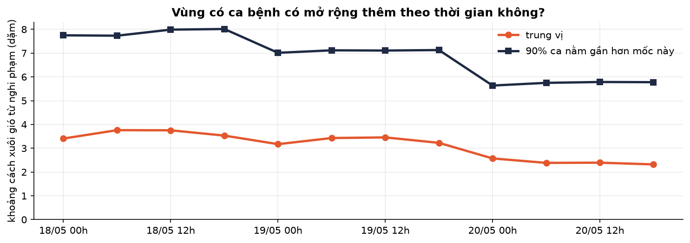
Nếu bệnh dạ dày - ruột cũng đi theo gió thì nó phải nằm phía đông, nhưng nó lại nằm phía tây nam. Vậy gió không giải thích được bệnh thứ hai.
SONG = np.array([(-93.350, 42.302), (-93.356, 42.290), (-93.362, 42.275), (-93.367, 42.262), (-93.375, 42.250),
(-93.390, 42.241), (-93.405, 42.236), (-93.418, 42.231), (-93.430, 42.226), (-93.445, 42.219),
(-93.46, 42.212), (-93.48, 42.204), (-93.50, 42.196), (-93.515, 42.187), (-93.525, 42.178),
(-93.530, 42.168), (-93.533, 42.160)]) # sông Vast, số hóa tay từ ảnh bản đồ (bắc xuống nam)
xy = np.c_[SONG[:, 0] * kx, SONG[:, 1] * ky]
doan = np.diff(xy, axis=0)
dai = np.hypot(*doan.T)
cong_don = np.r_[0, dai.cumsum()]
def toa_do_song(lon, lat):
"""Trả về (khoảng cách đến sông, vị trí dọc sông tính từ phía bắc), đơn vị dặm."""
P = np.c_[np.asarray(lon) * kx, np.asarray(lat) * ky]
gan, vt = np.full(len(P), 1e9), np.zeros(len(P))
for a, v, L, c0 in zip(xy[:-1], doan, dai, cong_don[:-1]):
t = np.clip(((P - a) @ v) / (L * L), 0, 1)
kc = np.hypot(*(P - (a + t[:, None] * v)).T)
tot = kc < gan
gan[tot], vt[tot] = kc[tot], c0 + t[tot] * L
return gan, vt
toa_do_song trả về hai số: cách sông bao xa và đã đi được bao xa dọc sông từ phía bắc.
gi19 = ngay19[ngay19["gi"]]
kc_gi, _ = toa_do_song(gi19["lon"], gi19["lat"])
kc_all, _ = toa_do_song(ngay19["lon"], ngay19["lat"])
for r in (1.0, 1.5, 3.0):
print(f"Trong {r} dặm quanh sông: {100 * (kc_gi < r).mean():.1f}% bài dạ dày - ruột, "
f"{100 * (kc_all < r).mean():.1f}% mọi bài cùng ngày")
Trong 1.0 dặm quanh sông: 60.1% bài dạ dày - ruột, 10.6% mọi bài cùng ngày Trong 1.5 dặm quanh sông: 84.2% bài dạ dày - ruột, 25.9% mọi bài cùng ngày Trong 3.0 dặm quanh sông: 99.0% bài dạ dày - ruột, 67.7% mọi bài cùng ngày
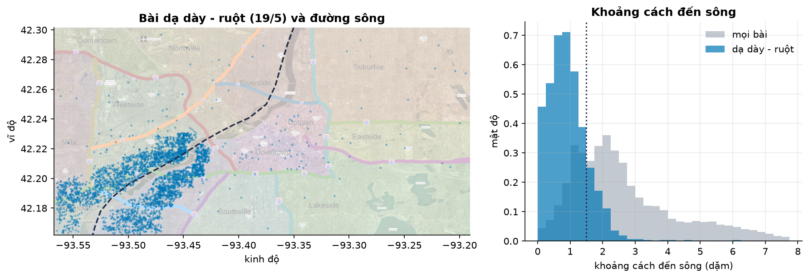
Cùng cách làm như với bệnh cúm, nhưng đổi sang nhóm dạ dày - ruột (màu xanh dương), bắt đầu từ 0h ngày 19/5, và vẽ thêm đường sông (nét đứt).
khung_gi = []
moc3_gi = pd.date_range("2011-05-19", periods=16, freq="3h")
for t0 in moc3_gi:
d = df[(df["t"] >= t0) & (df["t"] < t0 + pd.Timedelta(hours=3)) & df["gi"]]
fig, ax = plt.subplots(figsize=(6.4, 3.4), dpi=80)
base_map(ax, 0.3)
ax.scatter(d["lon"], d["lat"], s=1.6, c=GI, alpha=0.45)
ax.plot(SONG[:, 0], SONG[:, 1], color=NAVY, lw=1.4, ls="--")
ax.plot(*TAM[NGUON], marker="*", ms=13, mfc=GOLD, mec=NAVY, zorder=5)
ax.set_title(f"Ca dạ dày - ruột, {t0:%d/%m %Hh} đến {t0 + pd.Timedelta(hours=3):%Hh} ({len(d):,} bài)", fontsize=9)
ax.set_xticks([]); ax.set_yticks([]); ax.set_xlabel(""); ax.set_ylabel("")
fig.tight_layout(); fig.canvas.draw()
khung_gi.append(PILImage.fromarray(np.asarray(fig.canvas.buffer_rgba())).convert("P", palette=PILImage.ADAPTIVE))
plt.close(fig)
khung_gi[0].save("gi_spread.gif", save_all=True, append_images=khung_gi[1:], duration=500, loop=0)
Đã lưu gi_spread.gif: 16 khung hình, mỗi khung 3 giờ
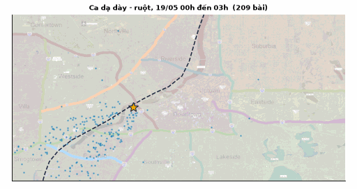
Ảnh động do ô mã c27b_gi_gif tạo ra: 16 khung hình, mỗi khung 3 giờ, từ 0h ngày 19/5 đến hết ngày 20/5.
Giờ ta chấm điểm từng nghi phạm theo hai tiêu chí: khớp hướng gió (cho bệnh cúm) và gần dòng sông (cho bệnh dạ dày - ruột).
vt_gi = toa_do_song(gi19["lon"], gi19["lat"])
hang = []
for ten_sk, tam in TAM.items():
cach_song, vt_nguon = toa_do_song([tam[0]], [tam[1]])
ha_luu = (vt_gi[1] > vt_nguon[0]) & (vt_gi[0] < 1.5) # nằm phía hạ lưu và sát sông
hang.append([ten_sk, round(cach_song[0], 2), 100 * ha_luu.mean()])
song = pd.DataFrame(hang, columns=["sự kiện", "cách sông (dặm)", "% ca dạ dày ở hạ lưu"]).set_index("sự kiện")
tong = diem.join(song)[["% ca trong dải xuôi gió", "cách sông (dặm)", "% ca dạ dày ở hạ lưu"]]
print(tong.round(1).sort_values("% ca trong dải xuôi gió", ascending=False).to_string())
% ca trong dải xuôi gió cách sông (dặm) % ca dạ dày ở hạ lưu sự kiện Xe tải, tai nạn 90.0 0.1 83.8 Dọa đánh bom 66.7 1.2 84.0 Tòa nhà Capital 44.6 2.2 84.0 Triển lãm đồ cổ 39.5 1.9 84.1 Hội nghị 39.4 1.9 84.1 Lễ hội 17.9 3.5 84.1 Nổ, khói bụi 2.5 1.1 2.2 Máy bay rơi 2.4 5.0 83.8
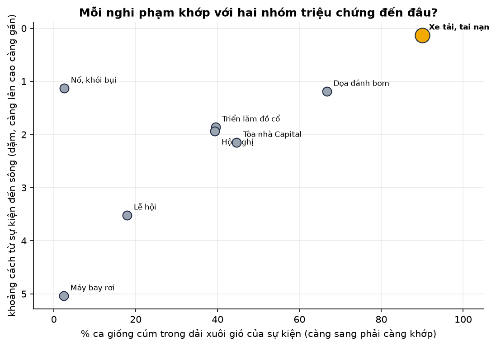
def chi_so(d, huong):
"""Hai chỉ số cho một tập bài: % trong dải xuôi gió của nguồn, và % sát sông (<= 1,5 dặm)."""
doc, ngang = toa_do_gio(d, TAM[NGUON], huong)
trong_dai = ((doc > 0) & (doc < 12) & (np.abs(ngang) < 1.5)).mean()
sat_song = (toa_do_song(d["lon"], d["lat"])[0] < 1.5).mean()
return [100 * trong_dai, 100 * sat_song]
g = weather.set_index("ngay")["gio_den"]
cum = df[(df["ngay"] == date(2011, 5, 18)) & df["flu"]]
da_day = df[(df["ngay"] == date(2011, 5, 19)) & df["gi"]]
thuong = df[df["ngay"] == date(2011, 5, 19)]
bang_cs = pd.DataFrame([chi_so(cum, g[date(2011, 5, 18)]), chi_so(da_day, g[date(2011, 5, 19)]),
chi_so(thuong, g[date(2011, 5, 19)])],
index=["ca giống cúm (18/5)", "ca dạ dày - ruột (19/5)", "mọi bài (19/5)"],
columns=["% trong dải xuôi gió (không khí)", "% sát sông (nước)"])
print(bang_cs.round(1).to_string())
% trong dải xuôi gió (không khí) % sát sông (nước) ca giống cúm (18/5) 78.6 23.9 ca dạ dày - ruột (19/5) 7.7 84.2 mọi bài (19/5) 33.4 25.9
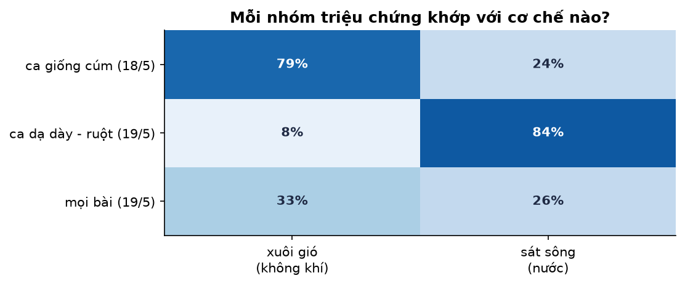
Nếu bệnh lây giữa người với người, số người mới kể về triệu chứng của chính mình phải tăng theo từng ngày. Ta tách riêng các bài nói về người khác (“Christian has caught...”) khỏi các bài tự kể.
# Bài "nói về người khác": có tên riêng + has/is, hoặc các đại từ he/she/they...
NGUOI_KHAC = r"\b[A-Z][a-z]{2,} (?:has|is|had) |\b(?:[Tt]hey|[Tt]hem|[Tt]heir|[Ss]he|[Hh]e|[Hh]is|[Hh]er)\b"
df["nguoi_khac"] = df["text"].str.contains(NGUOI_KHAC)
print("Ví dụ bài nói về người khác:")
print(df[df["flu"] & df["nguoi_khac"]]["text"].head(3).to_string(index=False))
def thong_ke_nguoi(cot):
d = df[df[cot] & (df["t"] >= "2011-05-17")]
tu_bao = d[~d["nguoi_khac"]] # bài tự kể về mình
lan_dau = tu_bao.groupby("ID")["ngay"].min().value_counts().sort_index()
return pd.DataFrame({
"bài": d.groupby("ngay").size(),
"% nói về người khác": (100 * d.groupby("ngay")["nguoi_khac"].mean()).round(0),
"người tự báo": tu_bao.groupby("ngay")["ID"].nunique(),
"người tự báo mới": lan_dau}).fillna(0).astype(int)
tk_flu, tk_gi = thong_ke_nguoi("flu"), thong_ke_nguoi("gi")
print("Nhóm giống cúm:"); print(tk_flu.to_string())
print("Nhóm dạ dày - ruột:"); print(tk_gi.to_string())
Ví dụ bài nói về người khác:
Christian has caught a pneumonia home is where they are s...
David has a case of the chills wish they were feeling better
Watching the sickly can be so depressing. Ryan has caught...
Nhóm giống cúm:
bài % nói về người khác người tự báo người tự báo mới
ngay
2011-05-17 230 24 173 173
2011-05-18 14611 16 8254 8239
2011-05-19 21187 30 9272 1634
2011-05-20 18325 49 7322 295
Nhóm dạ dày - ruột:
bài % nói về người khác người tự báo người tự báo mới
ngay
2011-05-17 123 15 104 104
2011-05-18 108 15 90 90
2011-05-19 4131 1 4104 4096
2011-05-20 3806 1 3778 738
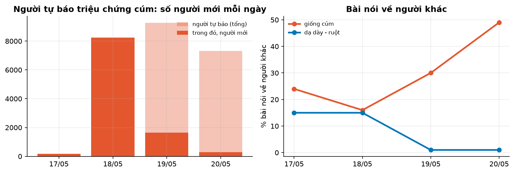
Từ bằng chứng đến hành động: bệnh viện, vùng ưu tiên và kế hoạch.
Chương 8 · Bước 6: Hệ thống y tế · Bước 7: Hành động
Ta xét các bài giống cúm từ 8h sáng 20/5. DBSCAN là thuật toán gom cụm theo mật độ: một điểm thuộc cụm nếu có ít nhất 80 điểm khác nằm trong bán kính 0,15 dặm quanh nó. Điểm lẻ loi được bỏ qua.
from sklearn.cluster import DBSCAN
sang20 = df[(df["t"] >= "2011-05-20 08:00") & df["flu"]]
P = np.c_[sang20["lon"] * kx, sang20["lat"] * ky]
nhan_cum = DBSCAN(eps=0.15, min_samples=80).fit_predict(P) # cụm: ít nhất 80 bài trong bán kính 0,15 dặm
cum_tam = np.array([[sang20["lon"][nhan_cum == k].mean(), sang20["lat"][nhan_cum == k].mean()]
for k in range(nhan_cum.max() + 1)])
print(f"DBSCAN tìm thấy {len(cum_tam)} cụm, chiếm {100 * (nhan_cum >= 0).mean():.0f}% bài giống cúm ngày 20/5")
Tên và tọa độ 13 bệnh viện lấy từ tài liệu mô tả và ảnh bản đồ (nằm trong sổ tay Colab). Với mỗi cụm, ta tìm bệnh viện gần nhất; gần hơn 0,3 dặm thì coi là trùng.
bv = np.array(list(BENH_VIEN.values()))
for k, c in enumerate(cum_tam):
kc = np.hypot((bv[:, 0] - c[0]) * kx, (bv[:, 1] - c[1]) * ky)
ten_bv = list(BENH_VIEN)[kc.argmin()] if kc.min() < 0.3 else "không phải bệnh viện"
print(f"cụm {k:2d}: {np.round(c, 4)} {(nhan_cum == k).sum():4d} bài -> {ten_bv}")
DBSCAN tìm thấy 15 cụm, chiếm 37% bài giống cúm ngày 20/5 cụm 0: [-93.3908 42.174 ] 282 bài -> Southville cụm 1: [-93.3622 42.2201] 520 bài -> Vastopolis City cụm 2: [-93.4788 42.2565] 283 bài -> Westside cụm 3: [-93.3304 42.2404] 421 bài -> St. Georges cụm 4: [-93.42 42.2526] 307 bài -> Northside cụm 5: [-93.2339 42.2947] 266 bài -> St. Mark's cụm 6: [-93.5567 42.2043] 274 bài -> Villa cụm 7: [-93.5317 42.2988] 291 bài -> Corner cụm 8: [-93.4947 42.2019] 253 bài -> Smogtown cụm 9: [-93.4451 42.2048] 275 bài -> Plainville cụm 10: [-93.3942 42.2201] 380 bài -> không phải bệnh viện cụm 11: [-93.3433 42.1682] 274 bài -> Lakeside cụm 12: [-93.2469 42.2197] 305 bài -> St. Kristin's cụm 13: [-93.3649 42.2844] 263 bài -> River cụm 14: [-93.341 42.2243] 271 bài -> không phải bệnh viện
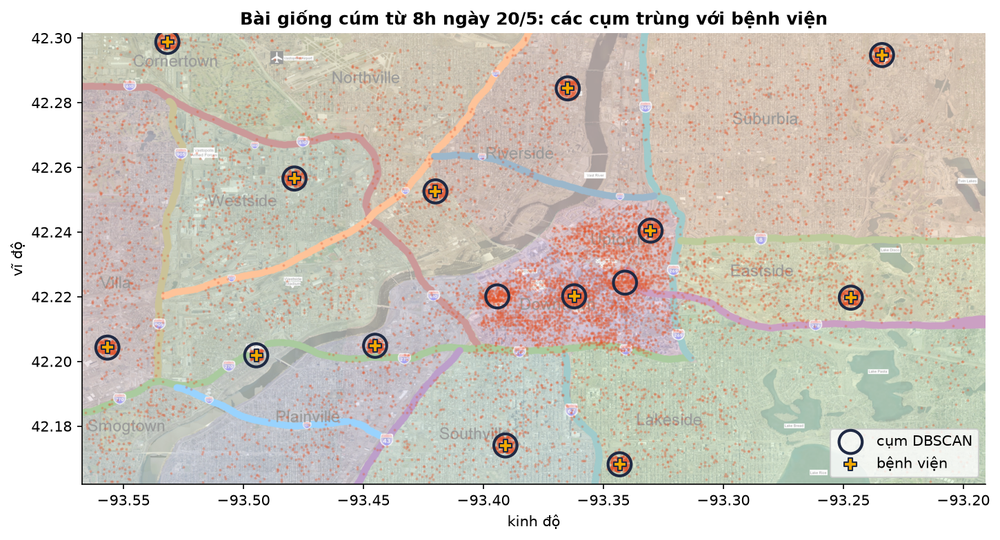
def gan_benh_vien(d, r=0.35):
"""Tỉ lệ bài nằm trong r dặm quanh một bệnh viện."""
kc = np.hypot((d["lon"].values[:, None] - bv[:, 0]) * kx, (d["lat"].values[:, None] - bv[:, 1]) * ky)
return (kc.min(1) < r).mean()
df["flu_tu"] = df["flu"] & ~df["nguoi_khac"] # bài cúm do người bệnh tự kể
hang = []
for ngay in [date(2011, 5, 17), date(2011, 5, 18), date(2011, 5, 19), date(2011, 5, 20)]:
ban_ngay_ = df[(df["ngay"] == ngay) & (df["t"].dt.hour >= 8)]
hang.append([ngay.strftime("%d/%m"), 100 * gan_benh_vien(ban_ngay_[ban_ngay_["flu_tu"]]),
100 * gan_benh_vien(ban_ngay_[ban_ngay_["gi"]]), 100 * gan_benh_vien(ban_ngay_[~ban_ngay_["flu"]])])
bang_bv = pd.DataFrame(hang, columns=["ngày", "% bài cúm tự báo gần BV", "% bài dạ dày gần BV", "% bài khác gần BV"])
print(bang_bv.round(1).to_string(index=False))
ngày % bài cúm tự báo gần BV % bài dạ dày gần BV % bài khác gần BV 17/05 9.3 5.5 6.4 18/05 17.0 6.8 7.3 19/05 16.8 5.0 7.4 20/05 55.6 5.4 9.7
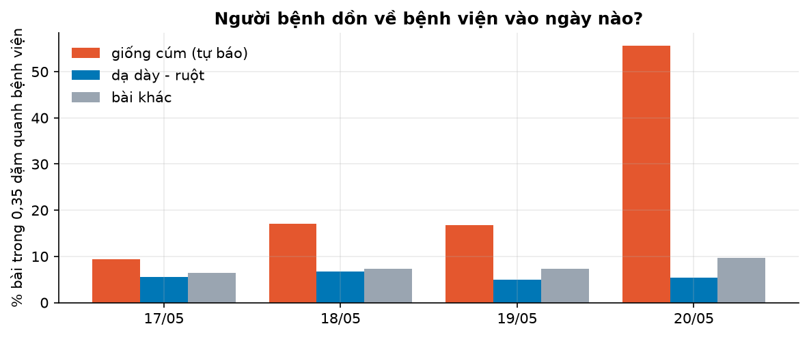
Ta cộng cả hai nhóm bệnh, lấy lượng bài vượt mức bình thường ngày 19/5 trên từng ô lưới, rồi tìm vùng nhỏ nhất chứa 80% lượng vượt mức.
tc19 = ngay19[ngay19["flu"] | ngay19["gi"]]
tc_nen = nen[nen["flu"] | nen["gi"]]
vuot = np.clip(luoi(tc19) - luoi(tc_nen) / n_nen, 0, None)
vuot = gaussian_filter(vuot, 1.0)
thu_tu = np.sort(vuot.ravel())[::-1]
so_o = np.searchsorted(np.cumsum(thu_tu) / thu_tu.sum(), 0.8) + 1
nguong = thu_tu[so_o - 1]
dien_tich_o = (xb[1] - xb[0]) * kx * (yb[1] - yb[0]) * ky
tong_dt = (EXTENT[1] - EXTENT[0]) * kx * (EXTENT[3] - EXTENT[2]) * ky
print(f"Vùng ưu tiên chứa 80% bài vượt mức: {so_o} ô, khoảng {so_o * dien_tich_o:.0f} dặm vuông, "
f"bằng {100 * so_o * dien_tich_o / tong_dt:.0f}% diện tích thành phố ({tong_dt:.0f} dặm vuông)")
Vùng ưu tiên chứa 80% bài vượt mức: 2508 ô, khoảng 49 dặm vuông, bằng 26% diện tích thành phố (186 dặm vuông)
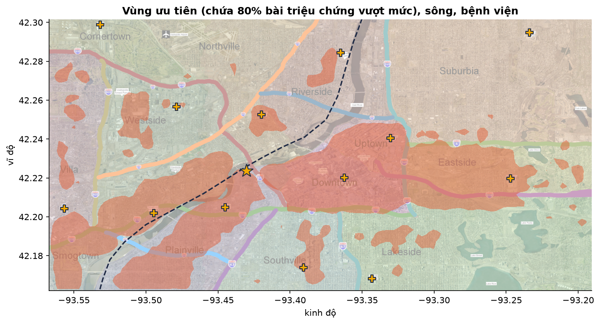
| Việc cần làm | Dựa vào bằng chứng | Giới hạn của bằng chứng |
|---|---|---|
| 1. Khoanh vùng, lấy mẫu không khí, nước và đất quanh vị trí vụ tai nạn xe tải để xét nghiệm | 90% ca cúm sáng 18/5 nằm xuôi gió; vị trí cách sông 0,1 dặm | Chỉ có bài đăng, chưa có mẫu thật. Đây là giả thuyết cần kiểm chứng. |
| 2. Cảnh báo dân không dùng nước sông, ưu tiên ven sông phía hạ lưu (trong 1,5 dặm) | 84% bài dạ dày - ruột nằm trong 1,5 dặm quanh sông | Đường sông vẽ tay; chưa có số liệu chất lượng nước |
| 3. Bổ sung giường, thuốc, nhân viên cho các bệnh viện, nhất là các bệnh viện ở vùng ưu tiên | 55,6% bài cúm tự báo đã nằm gần bệnh viện vào ngày 20/5; có cụm ở cả 13 bệnh viện | Bài ở bệnh viện chỉ nói nơi điều trị, không nói nơi nhiễm |
| 4. Thông báo và kiểm tra sức khỏe tại vùng ưu tiên (26% diện tích) | Vùng này chứa 80% bài vượt mức | Dựa trên một ngày dữ liệu |
| 5. Theo dõi bài đăng theo giờ để phát hiện ca mới ngoài vùng ưu tiên | Vùng ca bệnh không mở rộng thêm theo gió trong 3 ngày | Bài đăng không phải ca bệnh đã xác nhận |
t_sk = BAI_SK[NGUON]["t"].quantile(0.1)
t_cum = thoi_diem_bat_dau("flu")[0]
gio_flu = df.groupby(df["t"].dt.floor("h"))["flu"].sum()
t_bung = gio_flu[gio_flu > 20 * gio_flu.iloc[: 14 * 24].mean()].index[0]
t_gi = thoi_diem_bat_dau("gi")[0]
hai_20 = df[(df["t"] >= "2011-05-19") & df["flu_tu"]]
ti_le_bv = hai_20.groupby(hai_20["t"].dt.floor("h")).apply(gan_benh_vien)
t_bv = ti_le_bv[ti_le_bv > 0.3].index[0]
cac_moc = [(t_sk, f"{NGUON}\n(10% bài đăng đầu)", EVT), (t_cum, "bắt đầu có\nca giống cúm", FLU),
(t_bung, "ca giống cúm\nbùng nổ", FLU), (t_gi, "bắt đầu có ca\ndạ dày - ruột", GI),
(t_bv, "người bệnh dồn\nvề bệnh viện", GOLD)]
for t, ten_moc, _ in cac_moc:
print(f"{t:%d/%m %H:%M} {ten_moc.replace(chr(10), ' ')}")
17/05 10:22 Xe tải, tai nạn (10% bài đăng đầu) 18/05 01:00 bắt đầu có ca giống cúm 18/05 08:00 ca giống cúm bùng nổ 19/05 02:00 bắt đầu có ca dạ dày - ruột 20/05 07:00 người bệnh dồn về bệnh viện
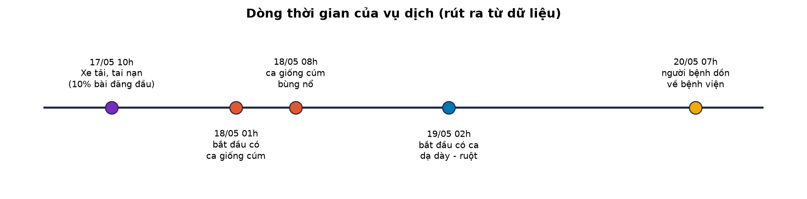
fig = plt.figure(figsize=(12, 5.2))
gs = fig.add_gridspec(2, 2, width_ratios=[1.8, 1])
ax = fig.add_subplot(gs[:, 0])
base_map(ax, 0.35)
mau_flu = df[(df["t"] >= "2011-05-18") & (df["t"] < "2011-05-21") & df["flu"]].sample(9000, random_state=2)
mau_gi = df[(df["t"] >= "2011-05-19") & (df["t"] < "2011-05-21") & df["gi"]].sample(5000, random_state=2)
ax.scatter(mau_flu["lon"], mau_flu["lat"], s=1.2, c=FLU, alpha=0.3, label="ca giống cúm")
ax.scatter(mau_gi["lon"], mau_gi["lat"], s=1.2, c=GI, alpha=0.3, label="ca dạ dày - ruột")
ax.plot(SONG[:, 0], SONG[:, 1], color=NAVY, lw=1.4, ls="--")
ax.scatter(bv[:, 0], bv[:, 1], marker="P", s=60, color=GOLD, edgecolor=NAVY, zorder=5, label="bệnh viện")
ax.plot(*TAM[NGUON], marker="*", ms=16, mfc=GOLD, mec=NAVY, zorder=6, label=NGUON)
ax.legend(loc="lower right", fontsize=8, markerscale=4); ax.set_title("Bản đồ tổng hợp")
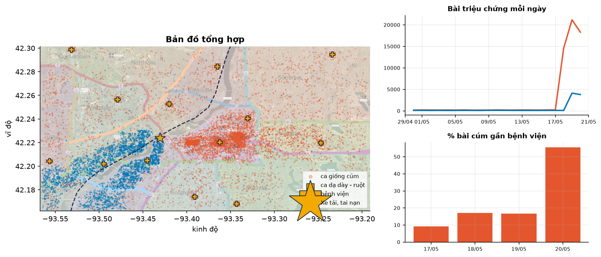
Tổng hợp bằng chứng, nói rõ giới hạn và đối chiếu với các nhóm khác.
Phần tổng kết
Mỗi câu trả lời được dẫn dắt từ một chuỗi biểu đồ, và mỗi chuỗi đều kết thúc bằng một giới hạn. Bảng sau tóm tắt toàn bộ.
| Câu hỏi | Giả thuyết được dữ liệu hỗ trợ | Bằng chứng chính | Giới hạn |
|---|---|---|---|
| Có dịch không? | Có hai nhóm bệnh khác nhau | Số bài mỗi ngày \(z=18\) và \(28\); từ vựng ngày 18/5 và 19/5 khác nhau | Từ khóa chọn sau khi thấy dữ liệu |
| Khi nào? | Cúm khởi phát 1h sáng 18/5; dạ dày - ruột 2h sáng 19/5 | Vượt ngưỡng trung bình + 5 độ lệch chuẩn | Ngưỡng do ta chọn |
| Ở đâu? | Cúm quanh Downtown; dạ dày - ruột ở tây nam | 112,7 bài trên 1000 (Downtown); 84% bài dạ dày - ruột ven sông | Ranh giới khu và đường sông ước lượng tay |
| Nguồn bệnh? | Vụ tai nạn xe tải ngày 17/5 | 90% ca cúm xuôi gió; cách sông 0,1 dặm; 122 bài nhắc tai nạn | Chỉ có bài đăng, không có mẫu bệnh phẩm |
| Lan bằng đường nào? | Cúm theo không khí; dạ dày - ruột theo nước | 79% xuôi gió (mốc 33%); 84% sát sông (mốc 26%) | Tương quan, chưa phải nhân quả |
| Người sang người? | Chưa thấy dấu hiệu rõ | Người tự báo mới giảm: 8.239, 1.634, 295 | Quy tắc nhận dạng bài thô |
| Hệ thống y tế? | Người bệnh dồn về bệnh viện ngày 20/5 | 55,6% bài cúm tự báo gần bệnh viện | Nơi đăng là nơi điều trị |
| Hành động? | Ưu tiên vùng chiếm 26% diện tích | Chứa 80% lượng bài vượt mức | Dựa trên một ngày |
| Nhóm | Cơ chế đề xuất | Lây giữa người với người | Khống chế |
|---|---|---|---|
| VSTI/SAS | Cúm: không khí. Dạ dày - ruột: nước sông | Có, kết hợp với không khí | Chưa: dịch còn lan rộng, cần cảnh báo vùng lân cận |
| giCentre (City, Đại học London) | Cúm: không khí. Dạ dày - ruột: nước | Không: cả hai bệnh đều không lây qua tiếp xúc | Có: cả hai bệnh được cho là đã khống chế |
| Fraunhofer IAIS | Cúm: không khí | Bác bỏ vì chưa đủ bằng chứng | Chưa về mặt không gian, nhưng nguồn nằm gọn trong một khu vực |
| Bài này | Cúm: không khí. Dạ dày - ruột: nước (giả thuyết) | Chưa thấy dấu hiệu rõ | Vùng bệnh không mở rộng, nhưng cần hỗ trợ bệnh viện |
Tóm tắt từ các bài nộp công khai của từng nhóm (xem trang nguồn ở cuối bài).
| Điểm | Ta tìm ra từ dữ liệu | Answer Guide của ban tổ chức |
|---|---|---|
| Nguồn | Vụ tai nạn xe tải 17/5, quanh \((42{,}2236;\ -93{,}4303)\) | Tai nạn xe tải trên cầu I-610 bắc qua sông Vast, 17/5, tâm \((42{,}22655;\ -93{,}42752)\): cách vị trí của ta khoảng 0,25 dặm |
| Gió | Thổi từ Tây sang Đông, khoảng 8 đến 10 dặm một giờ | Gió từ Tây sang Đông từ 16 đến 19/5, trung bình 8 dặm một giờ ngày 17/5 |
| Bệnh cúm | Khởi phát sáng 18/5, đi theo hướng gió | Triệu chứng giống cúm, bắt đầu khoảng 8h sáng 18/5, truyền qua không khí |
| Bệnh dạ dày - ruột | Khởi phát 19/5, ven sông phía tây nam | Bắt đầu 19/5, lan theo dòng nước chảy về nam - tây nam; truyền qua nước |
| Bệnh viện | 55,6% bài cúm tự báo gần bệnh viện ngày 20/5 | Khoảng 50% ca cúm quanh bệnh viện ngày 20/5, chọn bệnh viện ngẫu nhiên |
| Bài nói về người khác | Tăng 16%, 30%, 49% (nhóm cúm) | “Người đưa tin” đăng 5.400, 10.300 rồi 14.300 bài mỗi ngày |
| Người sang người | Chưa thấy dấu hiệu rõ | Không có lây người sang người; số người nhiễm giữ nguyên mỗi ngày và đăng lại |
| Kỹ thuật | Biểu đồ | Câu hỏi trả lời |
|---|---|---|
| Đọc và làm sạch dữ liệu | Bảng, bản đồ kiểm tra | Hồ sơ có gì, có đáng tin không? |
| Điểm \(z\) theo ngày | Biểu đồ đường | Ngày nào bất thường? |
| Tỉ lệ so với mức bình thường của từng giờ | Bản đồ nhiệt ngày \(\times\) giờ | Bất thường bắt đầu lúc mấy giờ? |
| Chỉ số lift của từ | Thanh ngang, thang log | Mọi người đang nói gì mới? |
| Nhóm từ khóa, ngưỡng báo động | Đường theo ngày, theo giờ | Có mấy bệnh, khi nào bắt đầu? |
| Bản đồ chấm, mật độ vượt mức, chuẩn hóa theo dân cư | Bản đồ chấm, bản đồ vùng | Khu nào bị nặng thật sự? |
| Phát hiện bùng nổ từ khóa, tọa độ trung vị | Bản đồ sự kiện | Ai là nghi phạm? |
| Dải xuôi gió, khoảng cách đến sông | Thanh ngang, biểu đồ phân tán hai trục, bản đồ nhiệt | Nghi phạm nào khớp? Bệnh đi đường nào? |
| Nhiều khung nhỏ, ảnh động | Lưới 12 bản đồ, GIF | Bệnh lan ra thế nào theo thời gian? |
| Gom cụm DBSCAN | Bản đồ cụm và bệnh viện | Người bệnh dồn về đâu? |
| Dòng thời gian, bảng điều khiển | Dòng thời gian, dashboard | Kể lại cả vụ án và đề xuất hành động |
Mọi hình, bảng và con số trong bài do mã trong sổ tay Colab vastopolis-dieu-tra-dich-benh.ipynb tạo ra từ tệp dữ liệu trên.